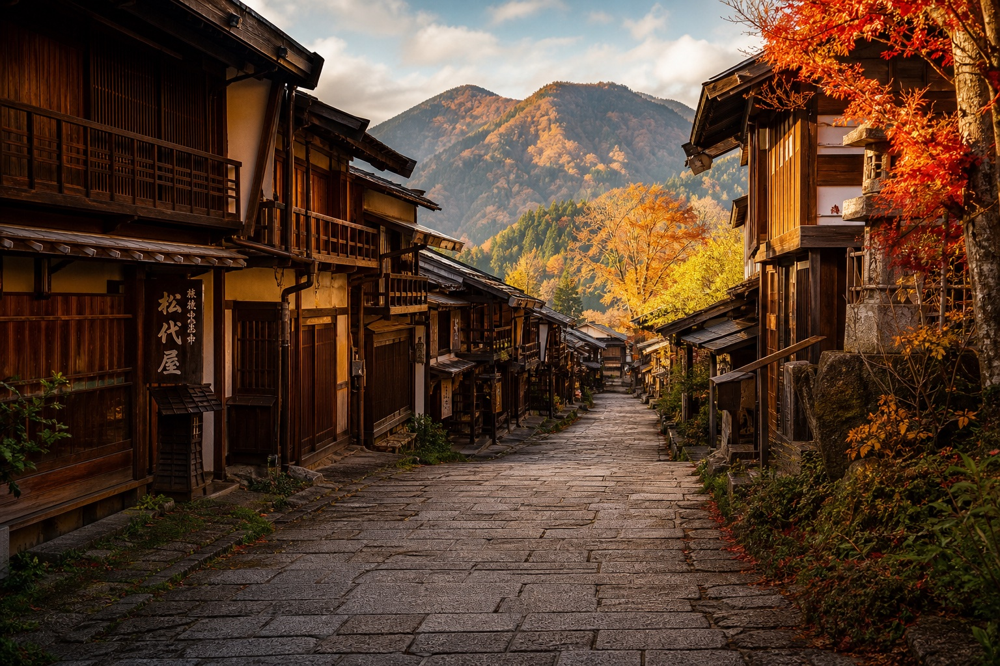
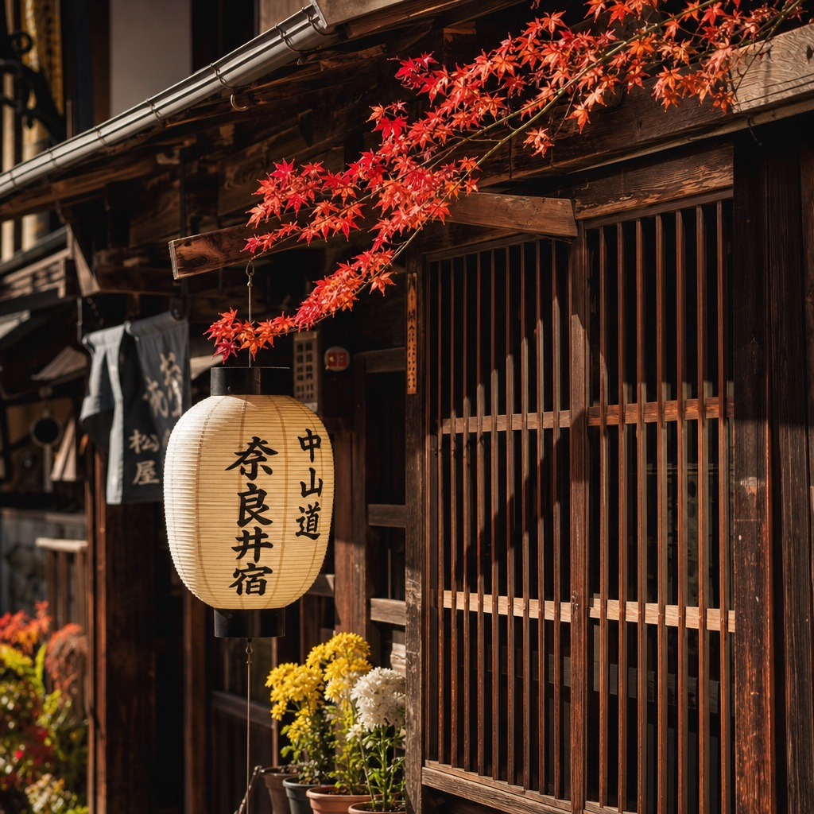
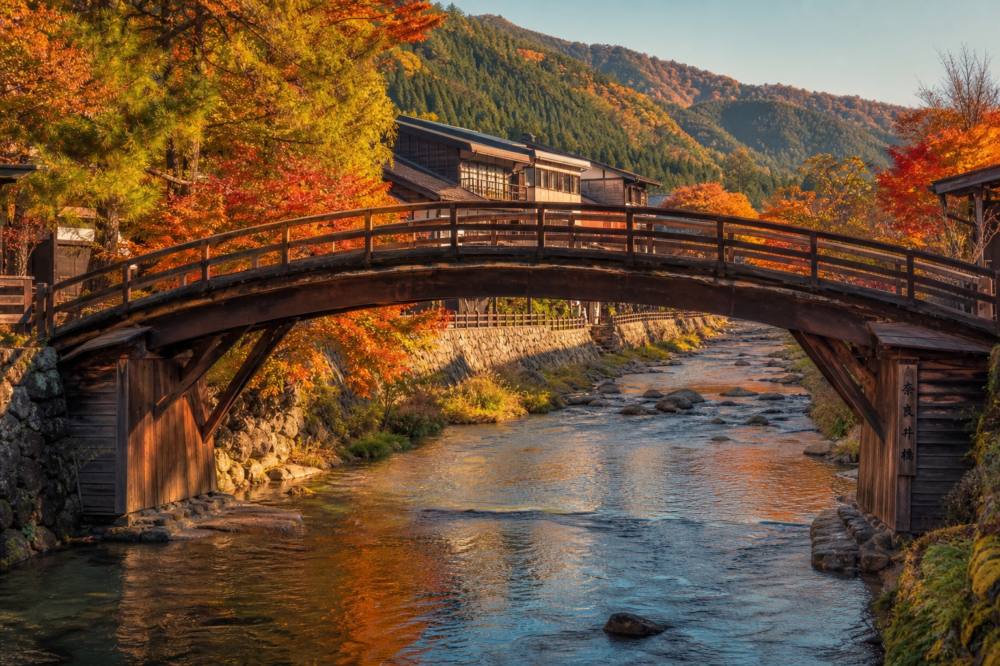

沿奈良井川蜿蜒近一公里的木造老街，出梁造町屋、千本格子窗與屋簷燈籠層層疊疊。每年十月中旬到十一月中旬，滿山楓紅為這座「奈良井千軒」的舊夢，再添一層暖色濾鏡。
奈良井宿是連接江戶（東京）日本橋與京都三条大橋的五街道之一「中山道」上，第 34 個宿場，也是穿越險峻木曾谷的「木曾十一宿」之一。它座落在中山道全線最高的難所——鳥居峠——腳下，是旅人翻越峠道前後必定投宿補給的據點。
正因為守著這個難所，江戶時代的奈良井宿曾異常繁盛，人稱「奈良井千軒」。如今町並沿奈良井川綿延約 1 公里，是日本現存最長的宿場町，2005 年重新測繪確認後也讓它有了這個稱號。走進去，會發現時間感被拉得很長——木造老屋一間接著一間，屋簷下掛著燈籠與布簾，秋天時整條街被染成深淺不一的紅與金。
木曾十一宿由南往北一路延伸，奈良井宿正好緊靠中山道最險峻的鳥居峠南側，是翻越峠道前最後一個大型宿場。以下為簡化示意圖，非精確比例。
木曾十一宿（贄川、奈良井、藪原、宮ノ越、福島、上松、須原、野尻、三留野、妻籠、馬籠）由南至北排列，奈良井宿緊鄰鳥居峠南側入口。原創示意圖，非官方測繪地圖。
從江戶初期作為驛站設立，到近代面臨拆除、再到成為文化財保護的範本，奈良井宿的歷史其實是一部「老街如何被留下來」的紀錄。
德川幕府整頓五街道之際，奈良井被設為中山道第 34 個宿場，隸屬木曾十一宿之一，負責傳遞公文與接待往來大名、商旅。
翻越中山道最險峻的鳥居峠之前，旅人多半會在奈良井宿補給、投宿一晚，帶動本陣、脇本陣、旅籠與商家林立，木曾十一宿中以此地最為熱鬧，故有「奈良井千軒」之稱。天保 14 年（1843）記錄顯示町內有本陣 1、脇本陣 1、旅籠 5，戶數 409、人口 2,155。
隨著中央本線鐵路開通與公路運輸興起，中山道作為主要幹道的功能逐漸消失，奈良井宿失去了原本的交通樞紐地位，卻也因此避開了大規模的現代化改建，木造町屋原貌被意外保留下來。
地方居民、學界與行政單位因「中村邸」是否遷移的爭議展開討論，成為官民學合作推動町並保存運動的契機。
1978 年 5 月 31 日，奈良井宿（連同鄰近的贄川、木曽平沢地區）獲日本文化廳指定，保存範圍達 17.6 公頃，自此町內修繕與新建都須依循傳統樣式規範。
1989 年獲「手づくり郷土賞」；2005 年再獲「手づくり郷土大賞」；2007 年入選「美しい日本の歴史的風土百選」，奈良井宿逐漸從地方保存案例變成全國知名的宿場町典範。

奈良井宿的町屋幾乎都遵循同一套江戶時期傳承下來的立面工法，走在街上會不斷看到重複出現的細節——這正是它作為「保存地區」最迷人之處：不是單棟古蹟，而是整條街一致的生活場景。
上町、中町、下町三段街區裡，藏著神社、史料館與一座總檜造的太鼓橋。建議由京都側的鎮神社一路走到江戶側的木曽の大橋，順著地勢緩緩下坡。
奈良井宿京都側（南端）的入口地標，江戶時代守護整座宿場的鎮守之神，也是逛街路線的自然起點。
江戶後期經營櫛（梳子）與漆器批發的商家舊宅，出梁造建築保存完整，是引發 1968 年町並保存運動的關鍵建物，現對外開放參觀。
由江戶時代負責宿場公務、掌管人馬繼立的「問屋」宅邸改建，館內展示宿場文書與生活道具，可一窺當年驛站行政的實際樣貌。
町內五座寺院之一，初夏杜鵑與秋季紅葉皆為人稱道，寺內留有相傳與傳教士相關的瑪利亞觀音像，是奈良井宿少見的隱藏故事。
橫跨奈良井川的總檜木造太鼓橋，弧線優美，是宿場町北端（江戶側）最具代表性的地標，秋天橋畔楓紅與河水相映，是明信片級的拍照點。
宿場外圍保留的古杉林蔭道，銜接鳥居峠登山口，走完老街後不妨延伸到這裡，感受江戶旅人真正上路前的最後一段平緩步道。
整條老街禁止車輛進入，建議把車停在外圍停車場後步行遊覽，全程慢慢走大約 3～4 小時即可完整走完。
JR 奈良井駅下車即抵老街，步行僅需 1 分鐘。
從東京出發：搭中央本線特急至 JR 塩尻駅轉乘普通車，約 25 分鐘可達奈良井駅，全程約需 2 小時 40 分以上。
從名古屋出發：搭特急約 1 小時 30 分即可抵達。
中央自動車道塩尻 IC 下交流道約 35 分鐘；伊那 IC 下車約 40 分鐘。
周邊設有約 220 個免費／付費停車位，老街內部全面禁止車輛進入，需步行遊覽。
紅葉期約在 10 月中旬至 11 月中旬。奈良井宿海拔近 950m，比周邊低地更早入秋、更早轉紅，是追楓行程可以提前排入的據點。
五個停留點的建議動線示意圖，實際街道走向請以現場路標為準。
從外圍停車場或鳥居峠登山口方向的杉木林蔭道開始，慢慢走入宿場町範圍，作為老街之旅的序曲。
從下町的水場望向仲町方向的角度，是奈良井宿最經典的宣傳照取景位置，木造町屋層層退去的透視感在此最明顯。
老街商店、伴手禮店與飲食店最集中的區段，中村邸、上問屋史料館也在這一段，可依興趣安排入內參觀。
宿場京都側的入口地標，適合作為漫遊的折返或收尾點，稍作參拜後原路或改道返回。
沿奈良井川走回江戶側，以總檜太鼓橋作結，橋上回望整條老街與遠山，是收尾的最佳角度。
| 道の駅木曽ならかわ | 車程約 5 分鐘，可體驗木曽漆器手作，是採買伴手禮的好去處。 |
| 味噌川ダム・奥木曽湖 | 車程約 14 分鐘，湖光山色，可安排獨木舟等水上活動。 |
| 鳥居峠健行 | 步行約 1 小時 10 分登頂，體力允許的話值得專程一趟，見上方「鳥居峠」段落。 |
奈良井宿自江戶時代起就是木曾漆器與木工藝的集散地，中村邸的舊主人便是經營梳子批發起家，這個工藝傳統一路延續到今天的商店街上。

橫跨奈良井川、以整根檜木彎樑架構而成的太鼓橋，是奈良井宿江戶側（北端）最醒目的地標，也是道の駅木曽平沢方向遠望老街時第一眼會看到的畫面。
橋身弧度優美，不用一根鐵釘，延續了木曾谷「木の国」的木工傳統。秋天楓紅垂落兩岸，河水清澈倒映橋身與遠山，是攝影愛好者公認奈良井宿最上鏡的角落之一。